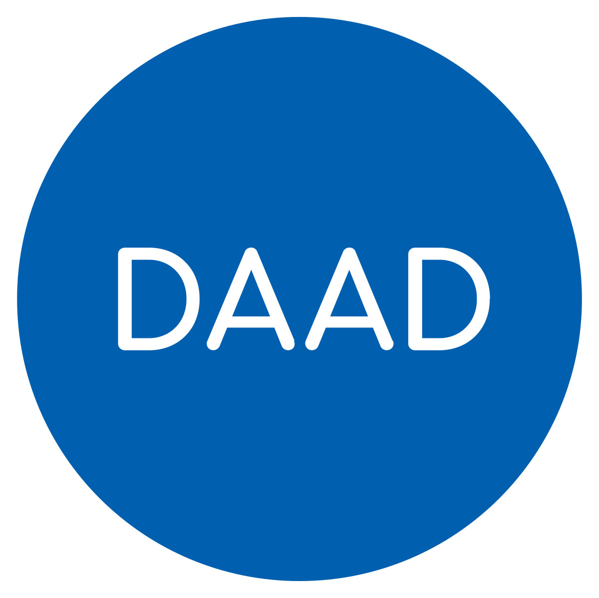
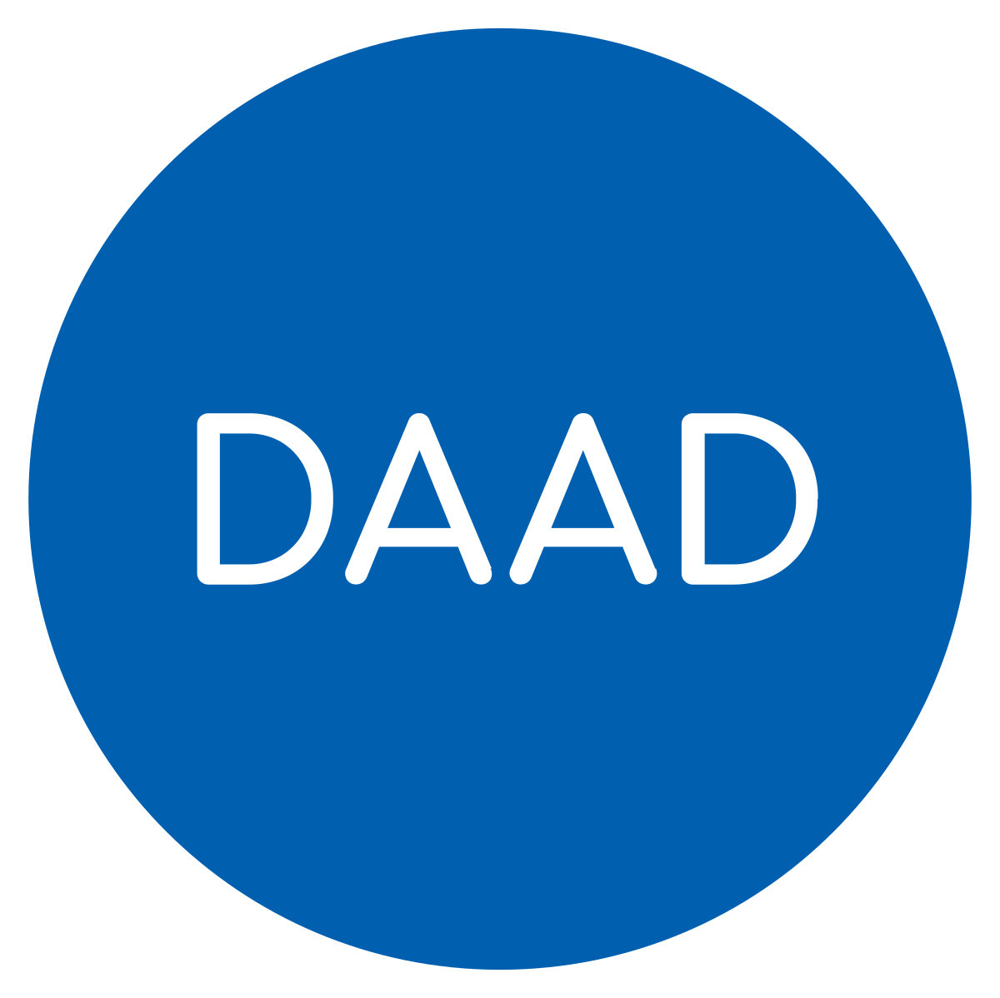
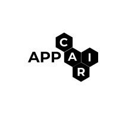
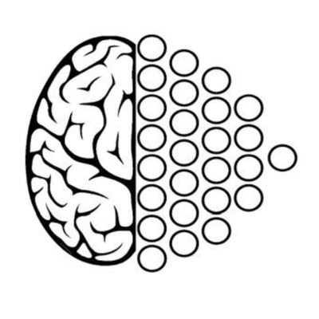

STREAM: A Universal State-Space Model for Sparse Geometric Data
[arXiv]
 

Mark Schöne*, Yash Bhisikar*, Karan Bania*, Khaleelulla Khan Nazeer, Christian Mayr, Anand Subramoney, David Kappel
abstract
Handling sparse and unstructured geometric data, such as point clouds or event-based vision, is a pressing challenge in the field of machine vision. Recently, sequence models such as Transformers and state-space models entered the domain of geometric data. These methods require specialized preprocessing to create a sequential view of a set of points. Furthermore, prior works involving sequence models iterate geometric data with either uniform or learned step sizes, implicitly relying on the model to infer the underlying geometric structure. In this work, we propose to encode geometric structure explicitly into the parameterization of a state-space model. State-space models are based on linear dynamics governed by a one-dimensional variable such as time or a spatial coordinate. We exploit this dynamic variable to inject relative differences of coordinates into the step size of the state-space model. The resulting geometric operation computes interactions between all pairs of N points in O(N) steps. Our model deploys the Mamba selective state-space model with a modified CUDA kernel to efficiently map sparse geometric data to modern hardware. The resulting sequence model, which we call STREAM, achieves competitive results on a range of benchmarks from point-cloud classification to event-based vision and audio classification. STREAM demonstrates a powerful inductive bias for sparse geometric data by improving the PointMamba baseline when trained from scratch on the ModelNet40 and ScanObjectNN point cloud analysis datasets. It further achieves, for the first time, 100% test accuracy on all 11 classes of the DVS128 Gestures dataset.
AtGCN: A Graph Convolutional Network For Ataxic Gait Detection
[arXiv]

Karan Bania, Tanmay Verlekar
abstract
Video-based gait analysis can be defined as the task of diagnosing pathologies, such as ataxia, using videos of patients walking in front of a camera. This paper presents a graph convolution network called AtGCN for detecting ataxic gait and identifying its severity using 2D videos. The problem is especially challenging as the deviation of an ataxic gait from a healthy gait is very subtle. The datasets for ataxic gait detection are also quite small, with the largest dataset having only 149 videos. The paper addresses the first problem using special spatiotemporal graph convolution that successfully captures important gait-related features. To handle the small dataset size, a deep spatiotemporal graph convolution network pre-trained on an action recognition dataset is systematically truncated and then fine-tuned on the ataxia dataset to obtain the AtGCN model. The paper also presents an augmentation strategy that segments a video sequence into multiple gait cycles. The proposed AtGCN model then operates on a graph of body part locations belonging to a single gait cycle. The evaluation results support the strength of the proposed AtGCN model, as it outperforms the state-of-the-art in detection and severity prediction with an accuracy of 93.46% and a MAE of 0.4169, respectively.
Implementation and Application of an Intelligibility Protocol for Interaction with an LLM
(PXP)
[arXiv / GitHub]


Ashwin Srinivasan, Karan Bania, Shreyas V, Harshvardhan Mestha, Sidong Liu
abstract
Our interest is in constructing interactive systems involving a human-expert interacting with a machine learning engine on data analysis tasks. This is of relevance when addressing complex problems arising in areas of science, the environment, medicine and so on, which are not immediately amenable to the usual methods of statistical or mathematical modelling. In such situations, it is possible that harnessing human expertise and creativity to modern machine-learning capabilities of identifying patterns by constructing new internal representations of the data may provide some insight to possible solutions. In this paper, we examine the implementation of an abstract protocol developed for interaction between agents, each capable of constructing predictions and explanations. The PXP protocol, described in [12] is motivated by the notion of ''two-way intelligibility'' and is specified using a pair of communicating finite-state machines. While the formalisation allows the authors to prove several properties about the protocol, no implementation was presented. Here, we address this shortcoming for the case in which one of the agents acts as a ''generator'' using a large language model (LLM) and the other is an agent that acts as a ''tester'' using either a human-expert, or a proxy for a human-expert (for example, a database compiled using human-expertise). We believe these use-cases will be a widely applicable form of interaction for problems of the kind mentioned above. We present an algorithmic description of general-purpose implementation, and conduct preliminary experiments on its use in two different areas (radiology and drug-discovery). The experimental results provide early evidence in support of the protocol's capability of capturing one- and two-way intelligibility in human-LLM in the manner proposed in [12].
This work's presentation led to the first prize in an ACM Goa event, slides.
Deep Forest Sciences
Previously, I co-developed MolGAN and Normalizing Flow implementations in PyTorch [arXiv].
Generative models for molecules have shown considerable promise for use in computational chemistry, but remain difficult to use for non-experts.
For this reason, we introduce open-source infrastructure for easily building generative molecular models into the widely used DeepChem library with the aim of creating a robust and reusable molecular generation pipeline.
In particular, we add high quality PyTorch implementations of the Molecular Generative Adversarial Networks (MolGAN) and Normalizing Flows.
Our implementations show strong performance comparable with past work.
abstract
Contributing to the DeepChem library.
I have added several tutorials (and adding more basic equivariance tutorials),
[1]
[2]
[3].
I am developing a pipeline for arbitrary property optimization in Materials Science (along with Applied Materials!)
[RE] Teaching CLIP to Count to Ten
[arXiv / GitHub]

Harshvardhan Mestha, Tejas Agrawal, Karan Bania, Shreyas V, Yash Bhisikar
Large vision-language models (VLMs) are shown to learn rich joint image-text representations enabling high performances in relevant downstream tasks.
However, they fail to showcase their quantitative understanding of objects, and they lack good counting-aware representation.
This paper conducts a reproducibility study of 'Teaching CLIP to Count to Ten' (Paiss et al., 2023), which presents a method to finetune a CLIP model (Radford et al., 2021) to improve zero-shot counting accuracy in an image while maintaining the performance for zero-shot classification by introducing a counting-contrastive loss term.
We improve the model's performance on a smaller subset of their training data with lower computational resources.
We verify these claims by reproducing their study with our own code.
The implementation can be found at this https URL.
abstract
This is a student-led reproduction of the Google Brain paper, Teaching CLIP to Count to Ten (arXiv).
{kind=link}